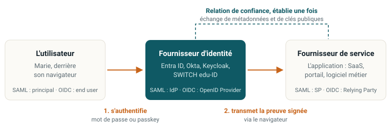

SSO et fédération
Une seule authentification pour toutes les applications
Marie utilise une quarantaine d’applications. Comment une seule authentification peut-elle servir à toutes, sans que chacune voie son mot de passe ?
Le problème que la fédération résout
Sans fédération
- Chaque application gère ses propres comptes : autant de bases de mots de passe, autant de fuites possibles, autant de comptes à fermer au départ d’un collaborateur.
- L’utilisateur réagit logiquement : il réutilise le même mot de passe partout. Une seule fuite compromet tout.
- Impossible de répondre à « à quoi Marie a-t-elle encore accès ? ».
- Fermer les accès devient un inventaire manuel, fait dans l’urgence, donc incomplet.
- Imposer le MFA suppose de le déployer trente fois, dans trente produits différents.
L’idée de la fédération
- Un seul système authentifie l’utilisateur.
- Toutes les applications lui font confiance et acceptent sa preuve signée, sans jamais voir le mot de passe.
- L’authentification devient un service central. La politique de sécurité s’applique en un seul endroit.
Le rapport Okta Businesses at Work 2024 compte en moyenne plus de 90 applications par organisation. Sans fédération, cela fait 90 bases de comptes à fermer au départ de chaque collaborateur. Avec, imposer les passkeys à toute l’organisation est une modification dans le fournisseur d’identité, pas 90 projets.
Trois choses souvent confondues
1
Authentification unique (SSO)
Une seule authentification donne accès à plusieurs applications à l’intérieur d’une même organisation.
Exemple : Kerberos dans un domaine Active Directory. L’utilisateur ouvre sa session le matin et n’a plus rien à taper.
2
Fédération d’identité
Le SSO franchit la frontière de l’organisation. Deux entités distinctes établissent une confiance explicite.
Exemple : se connecter à un service SaaS avec le compte de son employeur, ou SWITCH edu-ID entre hautes écoles suisses.
3
Gestionnaire de mots de passe
L’outil connaît le mot de passe de chaque application et le tape à la place de l’utilisateur.
Ce n’est pas de la fédération : les comptes locaux existent toujours et devront être fermés un par un.
Le gestionnaire de mots de passe règle un problème de confort. Seule la fédération règle le problème de gouvernance, parce qu’elle supprime les comptes locaux au lieu de les cacher.
Les trois rôles de toute fédération

- L’utilisateur
- La personne qui veut accéder à l’application. Elle ne s’authentifie qu’à un seul endroit : le fournisseur d’identité.
- Le fournisseur d’identité (IdP)
- Il authentifie l’utilisateur et émet une preuve signée (assertion SAML, jeton OIDC). Il devient l’élément le plus critique du système d’information.
- Le fournisseur de service (SP)
- L’application. Elle reçoit la preuve, vérifie la signature, l’émetteur, le destinataire et la validité, puis ouvre une session et applique ses propres règles d’autorisation.
Ce vocabulaire est le même dans tous les protocoles, seuls les noms changent. L’apprendre ici évite de le réapprendre trois fois.
La relation de confiance s’établit une fois, à la mise en place, pas à chaque connexion. L’administrateur importe le fichier de métadonnées du fournisseur d’identité (avec son certificat de signature) dans l’application, et l’adresse de l’application dans le fournisseur d’identité. À partir de là, l’application croit tout ce que signe le fournisseur d’identité, et seulement cela.
La fédération répond à « qui est-ce ? », pas à « que peut-il faire ? ». L’application décide elle-même de l’autorisation. Ce sont les quatre questions du chapitre 1.
Le fournisseur d’identité devient le point unique de panne, et de compromission, de tout le système d’information. En 2023, l’intrusion chez Okta a inquiété des milliers de clients d’un coup. Si Entra ID tombe, Teams, Outlook et toutes les applications fédérées tombent ensemble.
Conséquence : il se protège comme un contrôleur de domaine. Comptes d’administration séparés, MFA résistant au phishing obligatoire, journalisation, plan de secours.